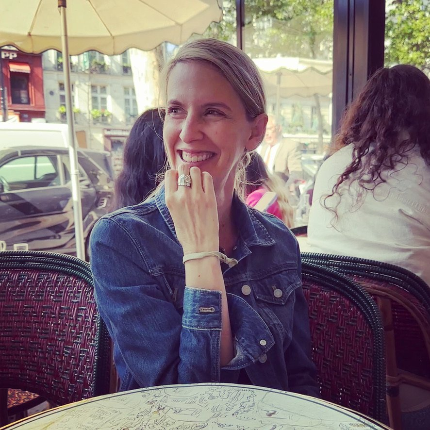

Our Story
A faculty-directed translation collective at the University of Virginia, bringing new literary voices to English-language readers.
Portavoz, Spanish for "spokesperson," is a literary translation archive at the University of Virginia directed by Professor Erica Cobb. The project brings together a revolving collective of current and former UVA students to translate contemporary and never-before-translated literary works, with the aim of publication and performance.
We believe literary translation is not merely a technical exercise but a creative act of cultural bridge-building. Every translation in our archive reflects months of careful reading, research, and revision carried out in close collaboration with Professor Cobb.
The project welcomes translations of poetry, theatre, short fiction, and essays, primarily from Spanish but open to other languages as well.

Dr. Cobb has lived, worked, and studied across Europe, Latin America, Australia, and the United States. Her scholarly background is in the Spanish Golden Age, and she currently specializes in the translation of poetry and theatre across all time periods. She is deeply interested in themes of identity, performance, and responsibility, both to one another and to the world we inhabit.
She directs the Portavoz Project and also freelance translates, with three upcoming publications through Valparaiso Editions: two collections by Mexican poet Miguel Ángel Galván and one by award-winning Spanish poet Ramón Andrés.
The students behind the translations — each bringing their own voice, background, and interpretation to the work.